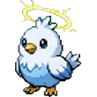

 Wind
Wind Electric
ElectricTap a stage to read its story.
Zephchick is a dainty pale-blue dove with soft round wings and a golden halo hovering above its head - not a decoration but a real electric corona that sparks when it hears thunder. It perches on the highest Storm Spire outcroppings, eyes wide, tracking every lightning bolt to map the paths it wants to fly someday. It chirps a quick two-note call before each flight as if asking permission from the sky, and waits for the answering rumble before it dares to lift off.
Field note: Zephchick's halo pulses once per second in calm weather but triples in speed just before a storm - eleven minutes before the first lightning strike.
Storm Spire. Zephchick and its family are found in the Storm Spire. See everyone who lives there.
Share a Bond Food that matches its types to become friends. Zephchick loves:
A Bond Food is not a trick. It joins your spirit with the Kimuro's spirit, and only when it chooses you.
Print the Kimuro adventure packs: mazes, cards, a board game and Bond Mark medals.
See the printable packs